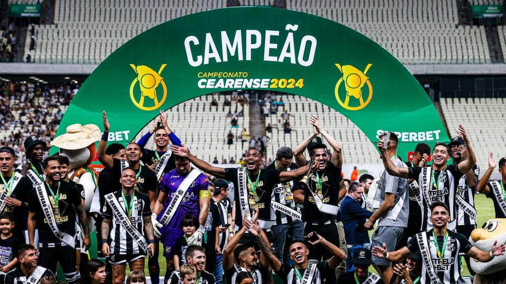

Championships
46 Campeonatos Cearenses
1915, 1916, 1917, 1918, 1919, 1922, 1939(Invicto), 1941(Invicto), 1942, 1948, 1951(Invicto), 1957, 1958, 1961, 1962, 1963(Invicto), 1971, 1972, 1975, 1976, 1977, 1978, 1980, 1981, 1984, 1986, 1989, 1990, 1992, 1993, 1996, 1997, 1998, 1999, 2002, 2006, 2011, 2012, 2013, 2014, 2017, 2018 e 2024(Invicto)
3 Copas do Nordeste
2015(Invicto), 2020(Invicto) e 2023

1 Torneio Norte-Nordeste
1969

12 Torneios Início do Ceará
1922, 1923, 1926, 1932, 1936, 1937, 1943, 1947, 1952, 1953, 1967 e 1978